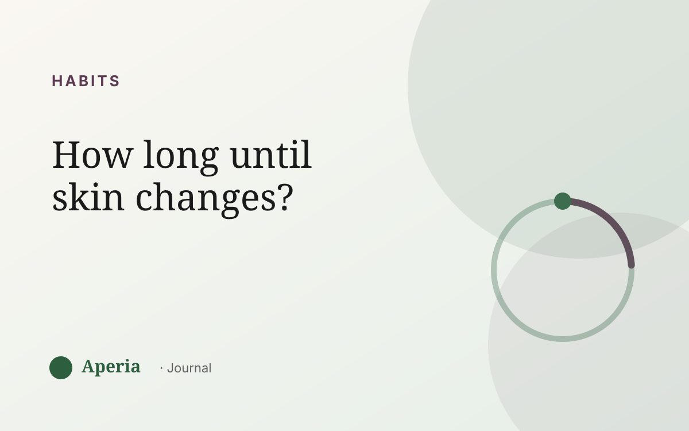

Habits
How long does it take to see skin improvement?
One of the most common reasons people give up on their skin is impatience — not because nothing was working, but because they were measuring over days when skin works over weeks. Here's the honest timeline.
The skin-cell timeline
Skin renews itself roughly every four to six weeks. That means any change — a new habit, a gentler routine, better sleep — needs about that long before a full layer of skin has turned over and the effect is really visible. Judging results after a few days is judging too early.
Why one month often isn't enough
If your skin follows your cycle, a single month only shows you one flare week and one good week. To separate a real improvement from the normal ups and downs of your cycle, you usually need to watch across two or three cycles and compare the same phase to itself.
Compare your flare week to last month's flare week — not to your best day. That's how you see real change.
The ‘it got worse first’ question
Some routines can go through a rocky adjustment before they settle. The way to tell an adjustment from a genuine mismatch is time and tracking: a steady trend over several weeks tells you far more than any single bad morning.
How to actually measure progress
- Set a baseline — a starting point you can compare back to, instead of relying on memory.
- Compare like with like — same phase of your cycle, not your worst day vs your best.
- Look at the trend over weeks, not the reading on any single day.
Give yourself something to compare to
Memory is a terrible judge of skin — we remember the bad mornings. Aperia gives you a real baseline: a zone-by-zone score over time and a genuine before-and-after, so progress you'd otherwise talk yourself out of is actually visible.
Common questions
How long does skincare take to work?
Give it at least four to six weeks — about one full skin-renewal cycle — before judging a new routine, and two to three months to separate real change from the normal ups and downs of your cycle.
Why is my skin not improving?
Often it is, but it's being measured too soon or against the wrong day. Skin turns over in weeks and moves with your cycle, so a fair comparison is the same cycle phase across a couple of months, not day to day.
How long until I see acne results?
Most changes take one skin cycle (four to six weeks) to start showing and two to three months to become clearly visible. Tracking a baseline makes the slow progress easier to see.
What's the best way to track skin progress?
Set a baseline, compare the same phase of your cycle month to month, and watch the trend over weeks rather than reacting to single days. A before-and-after with a zone score makes real progress visible.
See your own skin pattern
Track your skin and your cycle together. Free to start.
Download on the App StoreAperia is a self-knowledge tool, not a medical service. It helps you understand and track your skin; it doesn't diagnose, treat or cure anything. If you're concerned about your skin, talk to a qualified professional.